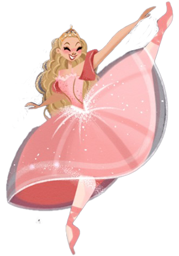
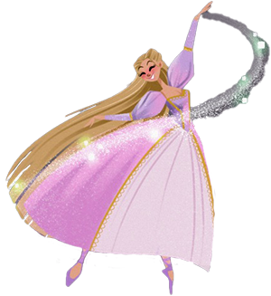
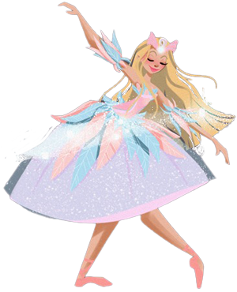
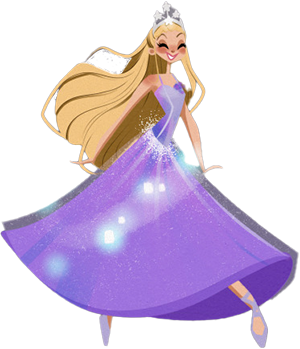
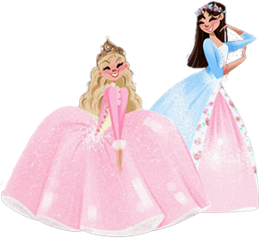

El cuento comienza cuando Barbie, interpretando el rol de Clara, recibe como regalo un hermoso Cascanueces de madera, de su Tía favorita. Esa noche, mientras Clara duerme, el Cascanueces vuelve a la vida para detener al malvado Rey Ratón, quien ha invadido la salita al conjurar un malvado hechizo.
Cuenta la historia de la hermosa y dulce princesa Rapunzel, una hermosa chica que, en realidad es una princesa, y que le encanta la pintura y que vive secuestrada con una malvada bruja, llamada la Bruja Greta, que la tiene encerrada en su mansión con el pretexto de protegerla.
La historia de Odette es la de una joven doncella que vive con su padre, un hombre humilde de oficio panadero que día a día se gana la vida ayudado de su hija. Un día común, mientras la jovencita se encuentra en el pueblo logra mirar a lo lejos a un unicornio que escapó del bosque encantado.
En un reino mágico, la reina quiere sorprender a su hija, la princesa Annika, con un regalo de cumpleaños. Cuando ella abre la puerta del cuarto de Annika, descubre que Annika no se encuentra, después de haber ido a una pista de hielo sin pedir permiso. Fuera patinando, Annika conoce a un pequeño oso polar al que llama Shiver. Cuando Annika regresa al palacio, sus padres están tan preocupados que le prohíben patinar nunca más.
Cuenta la historia de dos niñas que al nacer son idénticas pero solo en su apariencia física. Una de ellas es una princesa de nombre Annelise (Barbie), la cual ha crecido rodeada de lujos, sin embargo está sumamente presionada por sus deberes reales, entre los cuales se encuentra el matrimonio. La otra chica es una humilde costurera llamada Erika, quien se encuentra adeudada.
